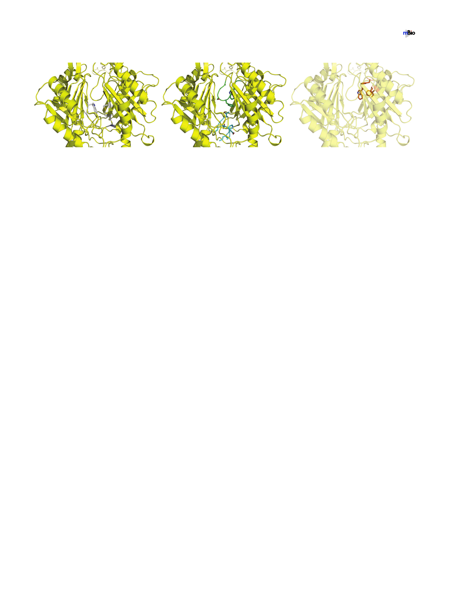

Su et al.
®
A.
B.
C.
W708 M656
A819
V658
P660
A615
S613
W610
F612
T668
L666
E665
P661
D664
A662
I663
F277
F178
W610 I607
FIG 3 The periplasmic multidrug binding sites of AdeB. (A) The periplasmic cleft entrance. Residues that are predicted to be important for selectivity are shown
as gray sticks. (B) The F-loop that forms part of the proximal multidrug binding site. Residues that are supposed to be important for drug binding in this F-loop
are shown as cyan sticks. The G-loop that is thought to be important for delivering a drug molecule to the distal multidrug binding site is colored green. The
G-loop residues are shown as green sticks. (C) The hydrophobic patch of the distal binding site. Residues that are responsible for forming this hydrophobic
patch are shown as orange sticks. The secondary structural elements of AdeB are colored yellow.
ligands. This observation is indeed in good agreement with the fact that CusA is a
specific heavy-metal efflux pump for cationic Cu(I) and Ag(I) ions.
There is a conserved flexible loop (PXIXXLGT) connecting the cleft entrance to the
proximal drug-binding pocket. In AdeB, this flexible loop is 661PAIDELGT668, which
forms the bottom section of the proximal site and is about 10 Å closer to the membrane
plane than the location of the G-loop to the same membrane plane (Fig. 3B). Based on
its important location, it is expected that this flexible loop may play a role in the
function of the AdeB pump. Therefore, we designated this flexible loop the “F-loop.”
This loop also participates in concocting part of the proximal multidrug binding site. In
AcrB, the composition of this F-loop is 669PAIVELGT676, where residue I671 has been
shown to be important for drug discrimination (38). In AdeB, this conserved isoleucine
is I663. Coincidentally, the corresponding F-loop residues in the CusA pump are
665PIRNRIDM672, which constitute the important horizontal helix in the metal binding
site, and M672 is deemed necessary to form the three-methionine binding site for
recognizing monovalent cations (30–32).
The proximal multidrug binding site has been shown to be extensive. The pump can
use a slightly different set of residues to accommodate for the binding of different
drugs. Based on the crystal structures and molecular dynamics simulations, 22 residues
of the AcrB pump that are supposed to be important for drug binding within the
proximal pocket were selected (19, 20, 36). Most of these residues are polar or
hydrophobic in nature. Noticeably, the conserved F-loop of AcrB in the proximal
binding site significantly contributes to drug binding, where V672, E673, L674, G675,
and T676 are found to participate in the event of substrate recognition (19, 36). The
corresponding residues in AdeB are D664, E665, L666, G667, and T668, in which E665,
L666, and G667 are conserved among the AdeB, AcrB, and MtrD pumps.
The G-loop residues are arranged in the manner GXGFXGX, where the three glycines
and single phenylalanine are conserved among AdeB, AcrB, and MtrD. In AdeB, this
loop consists of residues 609GWGFSGA615 (Fig. 3B). These G-loop residues are 614GFG
FAGR620 in AcrB (20). It has been found that the two glycines G616 and G619 are critical
for the function of AcrB, possibly providing flexibility for this G-loop to flip the bound
drug molecule from the proximal to distal binding site. Mutations of these glycine
residues have been found to drastically reduce the inhibitory concentrations of both
erythromycin and doxorubicin, presumably preventing the flexibility of this G-loop and
avoiding the movement of the bound drug molecule toward the distal site (20).
Molecular dynamics simulations also suggested that the AcrB F617 residue is important
for stabilizing the binding of the bound inhibitor 1-(1-naphtylmethyl)-piperazine when
it passes the G-loop (36). Thus, this G-loop is expected to be crucial for AdeB, and
residues G611, F612, and G614 could play a significant role in this pump.
It has been suggested that the distal multidrug binding pocket of AcrB consists of
at least 15 hydrophobic and 11 polar or charged residues (36). Among them, F178, I277,
July/August 2019 Volume 10 Issue 4 e01295-19
mbio.asm.org 6